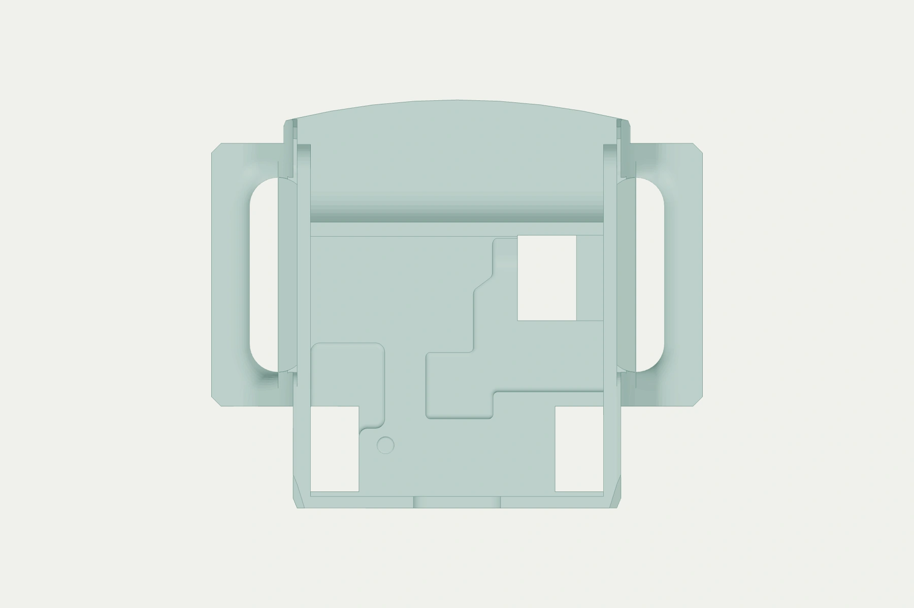
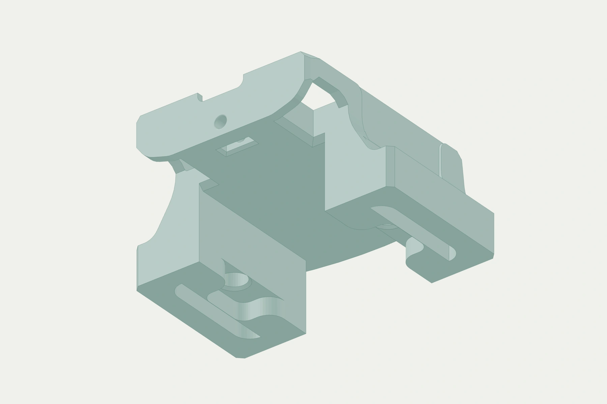
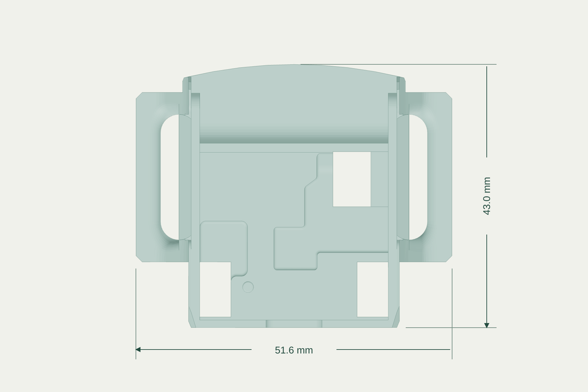
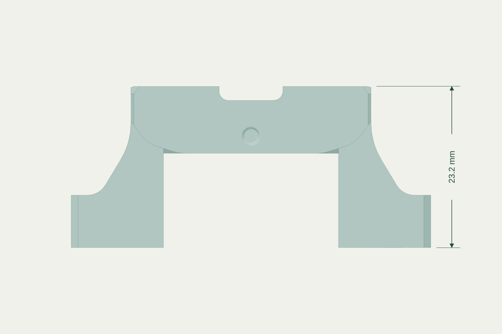

Sensor support and attachment in a single base.
I modeled this base for the lab’s custom IMU platform. The central platform combines raised perimeter rails, shaped recesses, rectangular openings, and small locating features. The side loops extend beyond that platform, integrating the strap interfaces into the same part.
The top view shows how these features share a compact footprint; the underside view shows the transitions between the central body and the strap loops.




Strap loops beside the sensor platform.
Two elongated openings provide the strap paths on opposite sides of the base. Curved transitions connect these lower features to the raised central platform. Circular mounting features and edge cutouts are incorporated into the surrounding walls.
A 51.6 × 43.0 mm footprint.
The overall model envelope includes the projecting strap loops and the full height of the raised features.
Dimensions measured from the CAD export and rounded to 0.1 mm.



